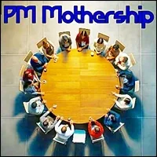
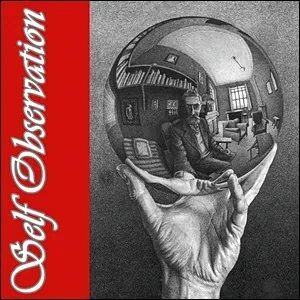
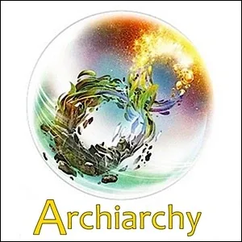
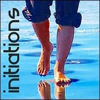
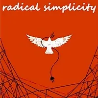

PM Mothership
- …
PM Mothership
- …
- PM Mothership - #### Here is a self-coordinated Team of volunteers co-creating Nodes in the Archiarchy / Possibility Management gameworld.- #### Is there a place here for you to play full out?
- The PM Mothership- This is the website for a Telegram Working Group- The link to join this Telegram group is:- https://t.me/+zyNTNR-_1zNlNDM1
- Experiments For Navigating The 3 Zones - START EVERYING WITH 5 SECONDS OF FIRST POSITION AND NEVER LEAVE IT- Matrix Code - 3ZONESxx.00
- START EVERYING WITH 5 SECONDS OF FIRST POSITION AND NEVER LEAVE IT- Matrix Code - 3ZONESxx.00

- LIVE IN SELF OBSERVATION WITH ABSOLUTELY NO JUDGMENT TO STAY AWARE OF YOUR 'X' ON THE MAP OF EGOSTATES- Matrix Code - 3ZONESxx.00
- DESIGN A HUMAN ADULT PHILOSOPHICAL INTERACTION IN THE CONTEXT OF ARCHIARCHY- Matrix Code - 3ZONESxx.00- After publishing your Archan Economics Design, please register Matrix Code 3ZONESxx.01 in your free account at StartOver.xyz. This Experiment is worth 5 Matrix Points. - THE INSTANT YOU START LEAVING THE GREEN ZONE, STOP EVERYTHING AND WRITE DOWN YOUR EXPERIENCE AS A DOORWAY TO AN EMOTIONAL HEALING PROCESS (EHP)- Matrix Code - 3ZONESxx.00 - Matrix Code - 3ZONESxx.00
- Matrix Code - 3ZONESxx.00 - Matrix Code - 3ZONESxx.00
- Matrix Code - 3ZONESxx.00 - Matrix Code - 3ZONESxx.00
- Matrix Code - 3ZONESxx.00 - Matrix Code - 3ZONESxx.00
- Matrix Code - 3ZONESxx.00 - Matrix Code - 3ZONESxx.00
- Matrix Code - 3ZONESxx.00 - Matrix Code - 3ZONESxx.00 - Matrix Code - 3ZONESxx.00
- Matrix Code - 3ZONESxx.00 - Matrix Code - 3ZONESxx.00 - Matrix Code - 3ZONESxx.00
- Matrix Code - 3ZONESxx.00
- Matrix Code - 3ZONESxx.00 - Matrix Code - 3ZONESxx.00
- NOTE:This website is a- Bubble in the Bubble Map- StartOver.xyz- doorway- experiments- upgrade your thoughtware- point of origin- create- possibility- knowledge- about. Your- thoughtware- with. When you- change your thoughtware- liquid state- reorganizes- feelings- emotions- upgrading your thoughtware- build matrix- consciousness- low drama- reactivity- collectively build- responsibly- 3ZONESxx.00to log your Matrix Point for reading this website on- StartOver.xyz
- Matrix Code - 3ZONESxx.00
- NOTE:This website is a- Bubble in the Bubble Map- StartOver.xyz- doorway- experiments- upgrade your thoughtware- point of origin- create- possibility- knowledge- about. Your- thoughtware- with. When you- change your thoughtware- liquid state- reorganizes- feelings- emotions- upgrading your thoughtware- build matrix- consciousness- low drama- reactivity- collectively build- responsibly- 3ZONESxx.00to log your Matrix Point for reading this website on- StartOver.xyz